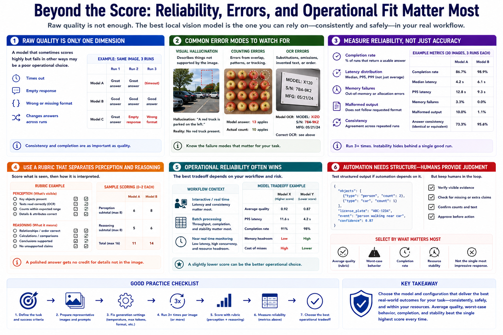

Accuracy, Reliability, and Stability
Connecting to LMS... Progress: in progress

Narration
Raw answer quality is only one selection dimension. A model that sometimes scores highly but frequently times out, returns an empty response, violates the requested format, or changes answers across runs may be a poor operational choice.
Visual hallucination occurs when the model describes something not supported by the image. Counting errors may come from overlap, repeated patterns, or weak spatial tracking. OCR errors include substitutions, omissions, invented text, and incorrect reading order.
Measure completion rate, latency distribution, memory failures, malformed output, and consistency across repeated runs. Three or more runs can reveal instability hidden by a single successful example. Keep generation settings fixed during comparison.
Use a rubric that separates perception from explanation. Score whether visible facts were extracted correctly, then whether reasoning from those facts was sound. A polished answer should not receive credit for unsupported details.
Operational reliability may favor a slightly lower-scoring model that is faster, finishes consistently, and stays within memory. The right tradeoff depends on whether work is interactive, batch, or near real time and how costly misses and false claims are.
Test structured output if automation depends on it, but retain human review for consequential decisions. Select using average quality, worst-case behavior, completion, and resource stability, not the single most impressive response.